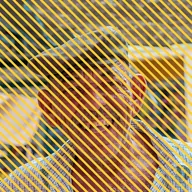

Mga Guhit

Gumuguhit ng pattern ng mga guhit sa hindi transparent na bahagi ng layer, o binubutas ang mga guhit mula rito.
Mga Setting
| Setting | Uri | Saklaw | Default |
|---|---|---|---|
| Bilang | Numero | 0.5 hanggang 200 | 10 |
| Lapad | Numero | 0 hanggang 1 | 0.5 |
| Anggulo | Anggulo | -3600° hanggang 3600° | 45° |
| Phase | Numero | -1000 hanggang 1000 | 0 |
| Kulay | Kulay | – | #2D1EF6 |
| Butasin | Naka-on o naka-off | – | Naka-off |
| Pagpapakinis | Numero | 0 hanggang 0.5 | 0.01 |
| Screen space | Naka-on o naka-off | – | Naka-off |